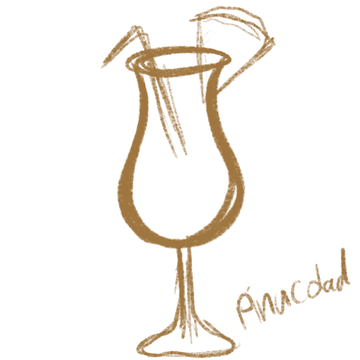
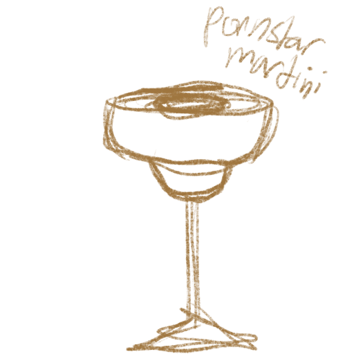

Espresso Martini
ingredients: 2 oz vodka, 1 oz coffee liqueur, 1 oz espresso, 0.5 oz simple syrup.
instructions: Shake all ingredients with ice and strain into a chilled glass. garnish with coffee beans... simple as that.
ingredients: 2 oz vodka, 1 oz coffee liqueur, 1 oz espresso, 0.5 oz simple syrup.
instructions: Shake all ingredients with ice and strain into a chilled glass. garnish with coffee beans... simple as that.

ingredients: 3 oz Aperol, 2 oz Prosecco, 1 oz soda water, ice, and an orange slice for garnish.
instructions: Fill a glass with ice, add Aperol and Prosecco, top with soda water, and garnish with an orange slice. Stir gently and enjoy!

ingredients: 2 oz light rum, 1 oz coconut cream, 1 oz pineapple juice, ice, and a pineapple wedge and cherry for garnish.
instructions: Blend all ingredients with ice until smooth, pour into a glass, and garnish with a pineapple wedge and cherry. Enjoy the tropical flavors!

ingredients: 2 oz vanilla vodka, 1 oz passion fruit liqueur, 1 oz passion fruit puree, 0.5 oz lime juice, 0.5 oz simple syrup, ice, and a shot of Prosecco on the side.
instructions: Shake all ingredients with ice and strain into a chilled glass. Serve with a shot of Prosecco on the side. Garnish with a passion fruit half or a lime wheel. Enjoy the sweet and tangy flavors!